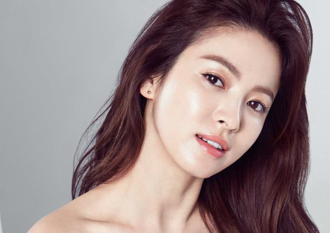

Khám phá những bí quyết làm đẹp của “nữ thần màn ảnh” Song Hye Kyo
Nếu luôn muốn xinh đẹp và tỏa sáng rạng ngời như "nữ thần màn ảnh" Song Hye Kyo thì hãy cùng The Soulmate bỏ túi những bí kíp làm đẹp dưới đây nhé.
Không thể phủ nhận được cô dâu hot nhất trong những tháng vừa qua không ai khác chính là Song Hye Kyo. Nhưng ngoài một chuyện tình thật đẹp với Song Joong Ki thì điều mà Song Hye Kyo còn khiến các cô gái khác ngưỡng mộ chính là vẻ đẹp không tuổi kể cả khi đã gần chạm nấc 40. Hôm nay hãy cũng The Soulmate khám phá những tips làm đẹp mà Song Hye Kyo thường hay áp dụng để giữ mãi vẻ thanh xuân nhé.
Chăm sóc da với những loại mặt nạ tự nhiên
Mỗi khi nhìn vào làn da của Song Hye Kyo, các cô nàng đều xuýt xoa ao ước và thầm ganh tị, nhưng đằng sau làn da đó là cả một quá trình chăm sóc kĩ lưỡng và đều đặn. Một bí kíp mà Song Hye Kyo luôn áp dụng chính là tự tạo ra những loại mặt nạ phù hợp với làn da của mình. Những công thức mặt nạ DIY của nàng ấy thường gồm những nguyên liệu cực kỳ dễ tìm và cách làm thì rất đơn giản. Chúng mình hãy cùng điểm qua các loại mặt nạ của “nữ thần màn ảnh” Song Hye Kyo nhé!
Mặt nạ lòng trắng trứng và mật ong giúp dưỡng trắng da

1 lòng trắng trứng và 1 thìa mật ong – đó là tất cả những gì bạn cần cho công thức này. Trộn đều 2 nguyên liệu với nhau và thoa lên mặt. Sau đó bạn chỉ cần nằm thư giãn, chờ cho lớp mặt nạ khô rồi rửa lại với nước. Song Hye Kyo đã chia sẻ rằng hầu như tối nào cô ấy cũng chăm chỉ thực hiện, và thời gian luôn là trước khi đi ngủ đó.
Mặt nạ mật ong làm sáng da
Pha loãng mật ong với lượng nước gấp đôi rồi thoa lên mặt massage nhẹ nhàng, rồi sau đó rửa lại với nước, đó là cách mà Song Hye Kyo áp dụng để duy trì vẻ tươi sáng của làn da. Ngoài ra, cô cũng chia sẻ rằng công thức ấy có thể cho thêm một thìa sữa bột vào, rồi nhúng miếng bông tẩy trang vào hỗn hợp này và đắp lên mặt tạo thành những miếng mặt nạ be bé, giống như chúng mình hay đắp lotion mask vậy đó. Nếu chưa biết cách sử dụng phương pháp lotion mask để dưỡng da thì các bạn hãy đọc thêm tại đây nhé.
Khi đắp như thế này thì The Soulmate cũng xin lưu ý với các bạn rằng để đạt hiệu quả cao nhất thì chúng mình nên dùng loại bông tẩy trang có thể tách được thành nhiều lớp như ARITAUM The Professional 5-Layer Cotton Pads nha!
Mặt nạ bột cà rốt chống lão hóa
Ở độ tuổi này thì đương nhiên chống lão hóa là một vấn đề mà Song Hye Kyo phải cực kì chú trọng. Lựa chọn cà rốt làm nguyên liệu chính, cô còn dùng thêm bột mì và nước đó. Cực kì đơn giản, chỉ cần nghiền nhuyễn cà rốt, trộn 3 phần cà rốt với 2 phần bột mì và thêm nước vào rồi trộn lên là xong luôn. Cà rốt là một nguyên liệu đơn giản, tiết kiệm mà lại rất hiệu quả để dưỡng da, nhất là chống lão hóa bởi cà rốt chứa nhiều beta-caroten, là chất chống oxy hóa rất tốt và ngoài ra còn nhiều vitamin và dinh dưỡng giúp chống lão hóa cho làn da.
Mặt nạ sữa làm mịn da
Công thức này thì chắc hẳn đã rất quen thuộc với nhiều bạn rồi nhỉ. Sử dụng sữa tươi thoa đều lên mặt rồi chờ vài phút, sau đó rửa lại với nước sạch là xong. Trong sữa tươi có chứa rất nhiều protein, enzyme và đặc biệt là axit lactic sẽ giúp cung cấp độ ẩm cho da và làm da mềm, mịn. Tuy nhiên, The Soulmate gợi ý các bạn nên dùng sữa tươi không đường thì sẽ tốt hơn đó nha.
4 loại mặt nạ kể trên chính là cách mà Song Hye Kyo giữ cho làn da của mình luôn đẹp không tì vết đó các bạn ạ. Các bạn hãy thử áp dụng những công thức DIY này và cảm nhận xem làn da của mình có thay đổi gì không nhé 🙂
Những “tuyệt chiêu” makeup trong veo tự nhiên
Mỗi lần xuất hiện, Song Hye Kyo thường làm mọi người ngất ngây bởi vẻ đẹp tự nhiên, mong manh như sương khói. Không cần quá cầu kỳ layer nhiều bước trang điểm, mà chỉ với lớp nền mỏng mịn, nhấn nhẹ vào đôi môi với những tone màu tươi sáng, lúc nào “nữ hoàng rating” của xứ Hàn cũng làm “đốn tim” người hâm mộ. Dưới đây chúng mình cùng tìm hiểu xem các tips makeup “chuẩn không cần chỉnh” của Song Hye Kyo nha.
Dùng cushion hoặc các loại kem nền có kết cấu mỏng, nhẹ
Song Hye Kyo rất ưa dùng Cushion hoặc một số loại Foundation có texture mỏng, nhẹ. Bạn cũng có thể trộn một chút highlighter (dạng kem) vào với kem nền, từ đó lớp nền sẽ căng mịn và bóng khỏe hơn. Hãy tránh xa những kem nền thật là dày nhé, vì nhìn sẽ bị thiếu tự nhiên và đôi khi lớp nền sẽ hơi “cakey” đó. Là gương mặt đại diện của LANEIGE, không lạ gì khi một trong những sản phẩm nền mà chúng ta hay bắt gặp cô nàng sử dụng nhất chính là LANEIGE BB Cushion.
LANEIGE BB Cushion có 2 dòng là Pore Control và Whitening, trong đó Pore Control là dòng dành cho da hỗn hợp thiên dầu hoặc da dầu, có lớp finish semi-matte, còn Whitening là dòng dành cho da thường hoặc da hỗn hợp thiên khô và da khô với lớp finish bóng hơn một chút. Cả 2 dòng đều có đặc điểm là rất mỏng, nhẹ, tiệp vào da nhanh chóng và để lại một lớp finish rất tự nhiên. Tuy nhiên em ấy có một nhược điểm nhỏ là độ che phủ không quá cao nên nếu bạn có khuyết điểm thì nên sử dụng thêm kem che khuyết điểm nhé.
Trang điểm mắt “nhẹ như không”
Đôi mắt của Song Hye Kyo được trang điểm rất nhẹ nhàng, đường kẻ mắt rất mảnh. Các bạn có thể tán bầu mắt thật đều với tone màu cam nhẹ, rồi kẻ một đường eyeliner cực mảnh ở mi trên. Sau đó bạn có thể tán một lớp màu mắt tone sáng ở dưới mắt để đôi mắt nhìn to, tròn và sáng hơn và để khuôn mặt nhìn đường nét hơn nhé. Đừng quên đôi mi các bạn nha. Để có đôi mi như Song Hye Kyo thì chúng mình chỉ cần kẹp mi để có hàng mi cong hơn, và đầu tư một chiếc mascara với đầu cọ nhỏ, chuốt một lớp mỏng là xong rồi đó.
Lựa chọn các tone má hồng tự nhiên
Để có được màu má như Song Hye Kyo thì The Soulmate khuyên các bạn nên lựa chọn các loại phấn má dạng cushion hoặc dạng kem có màu hồng, cam nhẹ nhàng nhé. Phấn má dạng cushion sẽ giúp cho màu bền lâu và sẽ tạo ra một lớp phấn tiệp vào da, ánh bóng lên nhìn siêu tự nhiên. Bật mí là trong ngày cưới của mình, Song Hye Kyo cũng đã sử dụng loại phấn má dạng cushion đó.
Sử dụng những màu son tươi sáng
Hiếm khi chúng mình bắt gặp “nữ thần màn ảnh” thoa những màu son đỏ, đậm, thường thì chúng mình chỉ nhìn thấy khi cô nàng có chiến dịch quảng cáo sản phẩm hay trong những lần chụp ảnh theo concept. Bình thường, Song Hye Kyo cực kì ưa thích màu son tươi sáng như hồng hay cam,… Nhưng để son lên môi được chuẩn màu và đẹp thì các bạn nhớ hãy dưỡng môi thật kĩ bằng cách dùng son dưỡng, mặt nạ ngủ môi,… và các sản phẩm che khuyết điểm cho môi nhé.
Song Hye Kyo rất chuộng dòng son LANEIGE Silk Intense Lipstick, trong đám cưới cô nàng đã sử dụng màu 330. Đây là dòng son mới được LANEIGE cải tiến, có dưỡng và hơi bóng nhẹ, nhìn rất tươi tắn và có khả năng giữ màu khá tốt, rất thích hợp để dùng vào mùa đông khi môi chúng mình có xu hướng bị khô và dễ nẻ hơn.
————————–
Vậy là chúng mình đã cùng khám phá một số bí kíp mà Song Hye Kyo thường áp dụng để giữ cho vẻ đẹp của mình “như mới ngày hôm qua” rồi. The Soulmate hi vọng những tips trên sẽ phần nào giúp các bạn trong công cuộc làm đẹp nha. Và các bạn hãy luôn nhớ phải uống đủ nước, ăn nhiều rau, bổ sung đủ dưỡng chất để đẹp “từ trong ra ngoài” nhé!
Chúc các bạn luôn xinh đẹp và rạng rỡ nhé 🙂